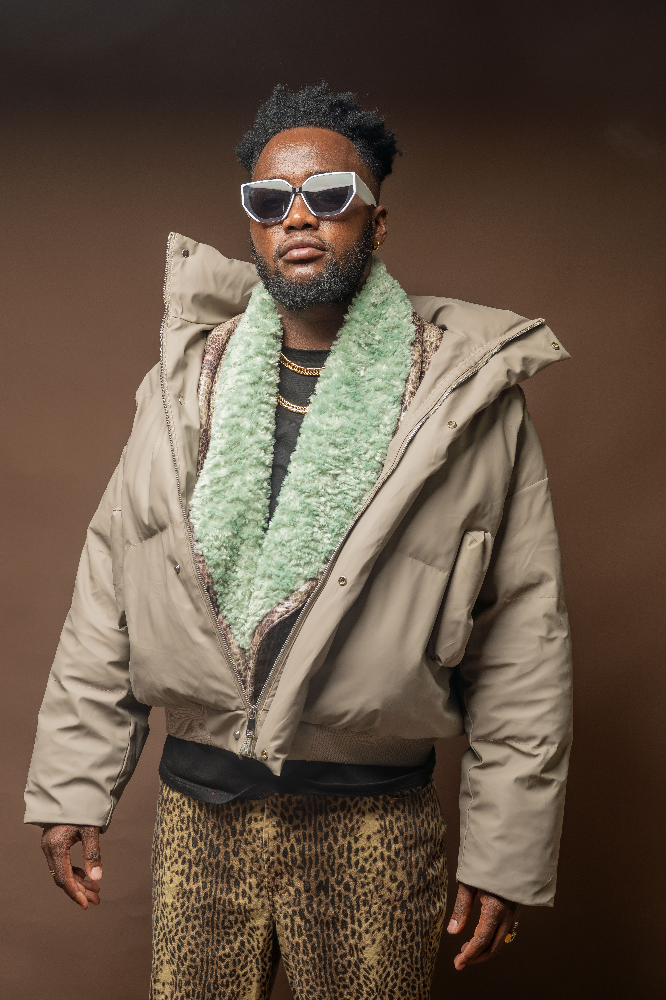

The Biography
David Longoji Ikiru, popularly known as Dufla Diligon, is a Kenyan recording and performing artist and songwriter whose music and artistry are deeply rooted in the culture, stories and lived experiences of Northern Kenya. Born and raised in Baragoi, Samburu County, Dufla has built a distinctive musical identity by blending Dancehall, Afrobeat, Reggae and contemporary African sounds.
Growing up in Samburu County, Dufla spent much of his childhood herding livestock, an experience that shaped his connection to his cultural heritage and the communities around him. His passion for music emerged at a young age and eventually led him to pursue music professionally, developing a career that has now spanned more than a decade.
Dufla gained national recognition with his hit single "Tempo," establishing himself as a notable voice within Kenya's contemporary music scene. One of the significant milestones in his career came through his collaboration with Kenyan artist Iyanii on the song "Donjo Maber," which was named Citizen Digital's Song of the Year for 2025.
As he marks 10 years in the music industry, Dufla Diligon continues to record, perform and collaborate across the region, while championing the rich cultural identity of Northern Kenya and using music as a platform for creativity, connection and unity.

Years in Music
Song of the Year 2025
Major Collabs
Throughout his career, Dufla Diligon has collaborated with a wide range of leading East African artists, exploring diverse musical styles while contributing to the growth and visibility of Northern Kenyan talent.